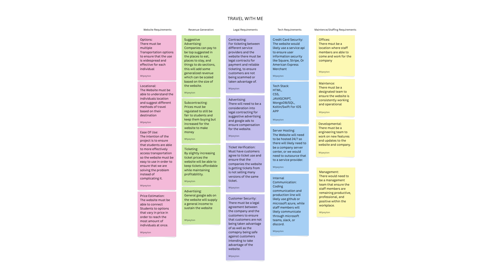

Highlighted projects
Problem Statement

Tackling the lack of access to transportation between Charlotte, North Carolina and Columbia, South Carolina.
Affinity Diagram
This diagram is broken into five seperate sections: Website Requirements, Revenue Generation, Legal Requirements, Tech Requirements, Maintence/Staffing Requirements. Each of these catergories focuses on a requirement to develop this business in order to solve the lack of access to transportation between Charlotte and Columbia.
Sketches
The three sketches depict a layout of a website and app for the company Travel with Me. Each image shows a feature of the company to ensure student's access to transportation. Most notably, there are four main types of travel, including trains, buses, cars/shuttles, and planes. Additionally, The app will use a Google Maps API to give a video depiction of the directions. Finally, There will be suggestions for things to do, places to eat, and places to stay.